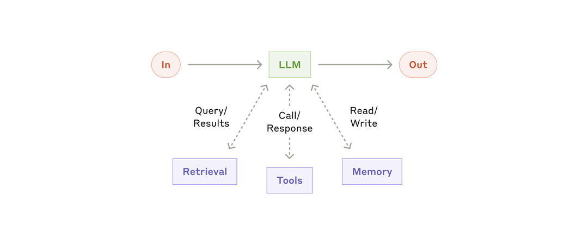
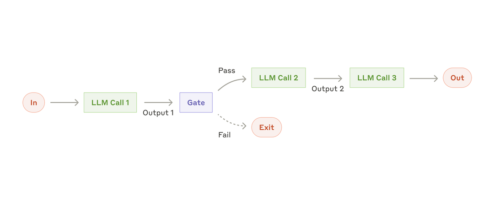
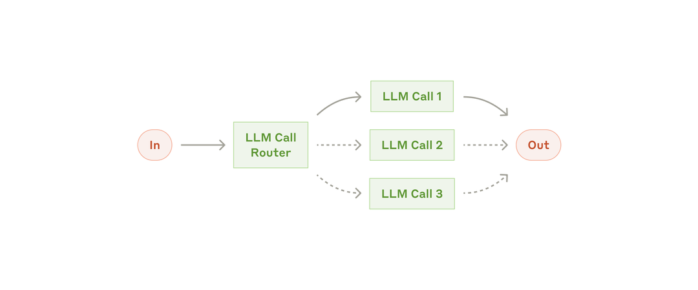
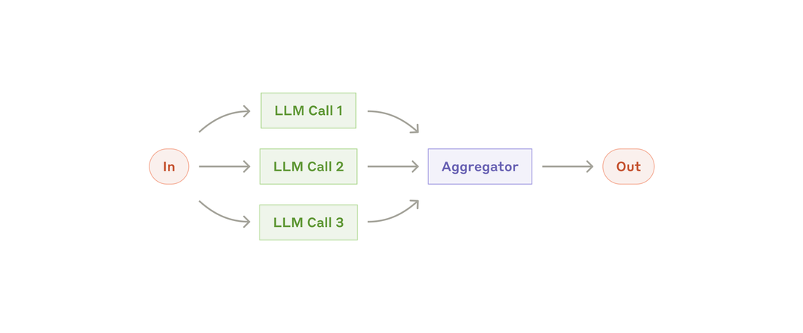
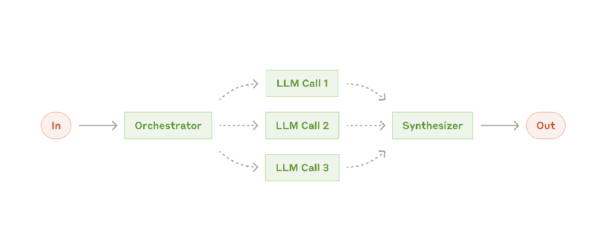
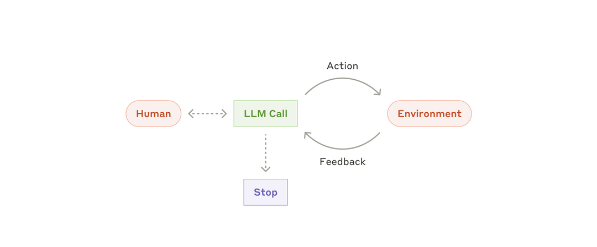

构建有效的 Agent
原文：Building effective agents 来源：Anthropic Engineering | 2024-12-19 作者：Erik S. & Barry Zhang
· · ·
索引
- 什么是 Agent？
- 何时（以及何时不）使用 Agent
- 何时以及如何使用框架
- 构建模块、工作流与 Agent
- 组合与定制这些模式
- 总结
- 附录 1：Agent 实践
- 附录 2：Prompt Engineering 你的工具
· · ·
什么是 Agent？
"Agent"可以有多种定义。一些客户将 agent 定义为完全自主的系统，能在较长时间内独立运行，使用各种工具完成复杂任务。另一些人则用这个术语描述更具规范性的实现——遵循预定义的工作流。在 Anthropic，我们将所有这些变体归类为 agentic 系统，但在架构上做出重要区分：工作流（workflows） 和 Agent：
- 工作流 是通过预定义代码路径来编排 LLM 和工具的系统
- Agent 则是 LLM 动态指导自身流程和工具使用的系统，对如何完成任务保持控制权
下文将详细探讨这两种 agentic 系统。在附录 1（"Agent 实践"）中，我们描述了客户在两个领域中发现这类系统特别有价值的案例。
· · ·
何时（以及何时不）使用 Agent
构建 LLM 应用时，我们建议找到最简单的可行方案，只在必要时增加复杂度。这可能意味着根本不需要构建 agentic 系统。Agentic 系统通常用延迟和成本换取更好的任务表现，你需要考虑这个权衡何时合理。
当更高复杂度确有必要时，工作流为定义明确的任务提供可预测性和一致性，而当需要灵活性和模型驱动的决策时，agent 是更好的选择。然而对于很多应用，优化单次 LLM 调用（配合检索和上下文示例）通常就够了。
· · ·
何时以及如何使用框架
有很多框架可以让 agentic 系统更容易实现，包括：
- Claude Agent SDK
- AWS 的 Strands Agents SDK
- Rivet，一个拖拽式 GUI LLM 工作流构建器
- Vellum，另一个用于构建和测试复杂工作流的 GUI 工具
这些框架通过简化调用 LLM、定义和解析工具、链接调用等底层任务来帮助快速上手。然而，它们往往创建额外的抽象层，遮蔽了底层的 prompt 和 response，使调试变得更困难。它们还容易诱导你在简单方案就够用时添加不必要的复杂度。
我们建议开发者从直接使用 LLM API 开始：很多模式几行代码就能实现。如果你确实使用框架，请确保理解底层代码。对底层行为的错误假设是客户常见的错误来源。
· · ·
构建模块、工作流与 Agent
本节我们将探讨在生产环境中常见的 agentic 系统模式。我们从基础构建模块——增强型 LLM——开始，逐步增加复杂度，从简单的组合式工作流到自主 agent。
· · ·
构建模块：增强型 LLM
Agentic 系统的基本构建模块是经过增强的 LLM——配备了检索（retrieval）、工具（tools）和记忆（memory）等能力。当前的模型能主动使用这些能力：自己生成搜索查询、选择合适的工具、决定保留哪些信息。

图：增强型 LLM 的基本结构
我们建议在实现时关注两个关键方面：将这些能力针对你的具体用例进行定制，以及确保它们为 LLM 提供简单、文档完善的接口。虽然实现增强的方式有很多，其中一种是通过我们最近发布的 Model Context Protocol（MCP），它允许开发者通过简单的客户端实现接入不断增长的第三方工具生态。本文后续内容假设每次 LLM 调用都能访问这些增强能力。
· · ·
工作流：Prompt 链式调用
Prompt chaining（链式调用）将任务分解为一系列步骤，每次 LLM 调用处理上一步的输出。你可以在任何中间步骤添加程序化检查（如下图中的"gate"），确保流程仍在正轨上。

图：Prompt 链式调用工作流
适用场景： 当任务可以轻松、清晰地分解为固定子任务时。主要目标是用延迟换取更高的准确率——让每次 LLM 调用处理更简单的任务。
示例：
- 生成营销文案，然后翻译成另一种语言
- 先写文档大纲，检查大纲是否满足特定标准，再根据大纲撰写文档
· · ·
工作流：路由
Routing（路由）对输入进行分类，并将其导向专门的后续任务。这种工作流实现了关注点分离，可以构建更专门化的 prompt。如果不做路由，针对某类输入的优化可能会损害其他输入的表现。

图：路由工作流
适用场景： 当复杂任务存在明确的类别，且这些类别分开处理效果更好时——前提是分类可以被准确完成（无论是用 LLM 还是传统分类模型/算法）。
示例：
- 将不同类型的客服查询（一般问题、退款请求、技术支持）导向不同的下游流程、prompt 和工具
- 将简单/常见问题路由到更小、更经济的模型（如 Claude Haiku 4.5），将困难/罕见问题路由到更强的模型（如 Claude Sonnet 4.5），以优化性价比
· · ·
工作流：并行化
LLM 有时可以同时处理一个任务的不同部分，然后通过程序化方式聚合输出。这种并行化工作流有两种主要变体：
- 分段（Sectioning）： 将任务拆分为独立的子任务并行执行
- 投票（Voting）： 对同一任务运行多次以获得多样化输出

图：并行化工作流
适用场景： 当子任务可以并行执行以提升速度时，或者当需要多个视角/多次尝试来获得更高置信度时。对于涉及多个考量因素的复杂任务，让每个考量由单独的 LLM 调用处理通常效果更好——每次调用可以专注于特定方面。
示例：
- 分段： 实现 guardrails——一个模型实例处理用户查询，另一个筛查不当内容或请求。这通常比让同一个 LLM 调用同时处理 guardrails 和核心响应效果更好。自动化 eval 评估 LLM 表现时，每个 LLM 调用评估模型在给定 prompt 上的不同方面。
- 投票： 审查代码漏洞时，用多个不同的 prompt 审查并标记问题。评估内容是否不当时，用多个 prompt 评估不同方面，或设置不同的投票阈值来平衡误报和漏报。
· · ·
工作流：编排者-工作者
在 orchestrator-workers（编排者-工作者）工作流中，一个中央 LLM 动态拆解任务、将子任务委派给工作者 LLM，然后综合它们的结果。

图：编排者-工作者工作流
适用场景： 当复杂任务的子任务无法提前预测时（例如在编码中，需要修改的文件数量和每个文件的修改内容取决于具体任务）。虽然拓扑结构与并行化类似，关键区别在于灵活性——子任务不是预定义的，而是由编排者根据具体输入动态决定的。
示例：
- 每次对多个文件进行复杂修改的编码产品
- 需要从多个来源收集和分析信息的搜索任务
· · ·
工作流：评估者-优化者
在 evaluator-optimizer（评估者-优化者）工作流中，一个 LLM 调用生成响应，另一个在循环中提供评估和反馈。

图：评估者-优化者工作流
适用场景： 当存在明确的评估标准，且迭代优化能带来可衡量的价值时。两个适配信号是：第一，当人类明确表达反馈时 LLM 的响应能明显改善；第二，LLM 能够提供这样的反馈。这类似于人类作者在产出精炼文档时经历的迭代写作过程。
示例：
- 文学翻译——译者 LLM 最初可能无法捕捉到某些细微之处，但评估者 LLM 可以提供有用的批评
- 复杂搜索任务——需要多轮搜索和分析来收集全面信息，由评估者决定是否需要进一步搜索
· · ·
Agent
随着 LLM 在关键能力上日趋成熟——理解复杂输入、进行推理和规划、可靠地使用工具、从错误中恢复——agent 正在生产环境中崭露头角。Agent 的工作始于用户的指令或与用户的交互式讨论。一旦任务明确，agent 就会独立规划和执行，必要时返回向人类获取更多信息或判断。
在执行过程中，agent 在每一步从环境获取"ground truth"（如工具调用结果或代码执行输出）来评估进展至关重要。Agent 可以在检查点或遇到阻碍时暂停，等待人类反馈。任务通常在完成时终止，但也常设置停止条件（如最大迭代次数）来保持控制。
Agent 能处理复杂任务，但实现往往很直接。它们通常只是 LLM 在循环中根据环境反馈使用工具。因此，清晰、周到地设计工具集及其文档至关重要。我们在附录 2（"Prompt Engineering your Tools"）中展开了工具开发的最佳实践。

图：自主 Agent
适用场景： 当面对开放式问题，无法预测所需步骤数量，也无法硬编码固定路径时。LLM 可能运行很多轮，你需要对其决策有一定程度的信任。Agent 的自主性使其非常适合在可信环境中扩展任务。
自主性也意味着更高的成本和错误累积的风险。我们建议在沙箱环境中进行充分测试，并配备适当的 guardrails。
示例（来自我们自己的实现）：
- 解决 SWE-bench 任务的编码 agent——根据任务描述对多个文件进行编辑
- 我们的"computer use"参考实现——Claude 使用计算机完成任务

图：编码 agent 的高层流程
· · ·
组合与定制这些模式
这些构建模块不是规定性的。它们是开发者可以根据不同用例塑造和组合的常见模式。成功的关键——和所有 LLM 功能一样——是衡量性能并迭代实现。再次强调：只有在复杂度能明显改善结果时才增加复杂度。
· · ·
总结
在 LLM 领域取得成功，不在于构建最复杂的系统，而在于构建最适合你需求的系统。从简单的 prompt 开始，用全面的评估来优化它们，只有当简单方案不够用时才引入多步骤 agentic 系统。
在实现 agent 时，我们遵循三个核心原则：
1. 保持 agent 设计的简洁性 2. 优先透明性——明确展示 agent 的规划步骤 3. 精心打造 agent-计算机接口（ACI）——通过完善的工具文档和测试
框架可以帮你快速起步，但在走向生产时不要犹豫去减少抽象层、用基础组件来构建。遵循这些原则，你可以创建不仅强大，而且可靠、可维护、受用户信任的 agent。
· · ·
附录 1：Agent 实践
我们与客户的合作揭示了 AI agent 的两个特别有前景的应用方向，它们展示了上述模式的实际价值。这两个应用都说明了 agent 在以下场景中最能发挥价值：需要对话与行动相结合、有明确的成功标准、能形成反馈循环、并整合有意义的人类监督。
A. 客户支持
客户支持将熟悉的聊天机器人界面与通过工具集成增强的能力相结合。这天然适合更开放式的 agent，因为：
- 支持交互天然遵循对话流程，同时需要访问外部信息和执行操作
- 工具可以集成来拉取客户数据、订单历史和知识库文章
- 退款、更新工单等操作可以程序化处理
- 成功可以通过用户定义的解决方案来明确衡量
多家公司已通过按成功解决收费的定价模式证明了这种方法的可行性，这体现了他们对 agent 有效性的信心。
B. 编码 Agent
软件开发领域展现了 LLM 功能的巨大潜力，能力已从代码补全演进到自主问题解决。Agent 在这里特别有效，因为：
- 代码方案可以通过自动化测试来验证
- Agent 可以利用测试结果作为反馈来迭代方案
- 问题空间定义明确且结构化
- 输出质量可以客观衡量
在我们自己的实现中，agent 现在可以仅根据 pull request 描述来解决 SWE-bench Verified benchmark 中的真实 GitHub issue。然而，虽然自动化测试有助于验证功能，人类审查对于确保方案符合更广泛的系统需求仍然至关重要。
· · ·
附录 2：Prompt Engineering 你的工具
无论你构建哪种 agentic 系统，工具都可能是 agent 的重要组成部分。工具让 Claude 能够与外部服务和 API 交互——通过在 API 中指定工具的精确结构和定义。当 Claude 响应时，如果它计划调用工具，会在 API 响应中包含一个 tool use block。
工具定义和规范应该得到与整体 prompt 同等程度的 prompt engineering 关注。
在这个简短的附录中，我们描述如何对工具进行 prompt engineering。
同一个操作通常有多种指定方式。例如，你可以通过写 diff 来指定文件编辑，也可以重写整个文件。对于结构化输出，你可以在 markdown 中返回代码，也可以在 JSON 中返回。在软件工程中，这些差异是表面的，可以无损转换。然而，某些格式对 LLM 来说比其他格式难写得多。写 diff 需要在新代码写出之前就知道 chunk header 中有多少行在变化。在 JSON 中写代码（相比 markdown）需要额外转义换行符和引号。
我们对选择工具格式的建议：
- 给模型足够的 token 来"思考"，避免它把自己写进死角
- 保持格式接近模型在互联网文本中自然见到的形式
- 确保没有格式"开销"——比如需要精确计算数千行代码的行数，或对它写的代码进行字符串转义
一个经验法则是：想想人机接口（HCI）投入了多少精力，然后计划在创建良好的 agent-计算机接口（ACI） 上投入同等精力。以下是一些具体建议：
- 站在模型的角度思考。 仅凭描述和参数，使用这个工具的方式是否显而易见？如果你需要仔细想想才能搞清楚，模型大概也是如此。好的工具定义通常包含使用示例、边界情况、输入格式要求，以及与其他工具的清晰边界。
- 如何修改参数名或描述来让事情更明显？ 把这想象成为团队里的初级开发者写一份出色的 docstring。当使用多个相似工具时这尤其重要。
- 测试模型如何使用你的工具： 在 workbench 中运行大量示例输入，观察模型犯什么错误，然后迭代。
- 对工具做防错设计（Poka-yoke）。 修改参数使犯错变得更难。
在构建 SWE-bench agent 时，我们实际上花在优化工具上的时间比优化整体 prompt 还多。例如，我们发现当 agent 离开根目录后，模型在使用相对文件路径的工具时会犯错。为了解决这个问题，我们将工具改为始终要求绝对路径——结果模型使用这种方式完美无误。
· · ·